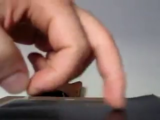

Codice usa e getta per il ticket #16, da buttare. Pipeline della research #15: Patch (FH con k = 2·min, oppure Ward finché nessuna Patch è sotto min) → bordi condivisi semplificati con Douglas–Peucker (ε) → una triangolazione di Delaunay vincolata di tutto il Frame → punti di Steiner per max → colore del Tessel = media dei pixel dentro il triangolo.
Le mesh sono precalcolate da generate.cpp (make in questa cartella) per i valori sui cursori; l'URL tiene la configurazione, quindi basta copiarlo per indicarne una.
